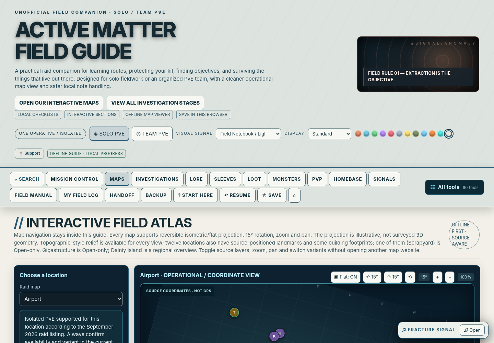

Maps & navigation
14 atlas locations, flat/isometric viewing, rotation, zoom, marker search and optional alignment against your own game screenshots.
A free, offline-ready Solo/Team PvE and optional PvP companion: source-aware interactive maps, investigation trackers, monster dossiers, homebase references, collectibles and an original ambient soundtrack.
No subscription, no game memory scanning, no mod installation, no automatic collection of your progress. Browser saves are local; export a backup before changing browsers or file locations.

14 atlas locations, flat/isometric viewing, rotation, zoom, marker search and optional alignment against your own game screenshots.
Separated Solo/Team PvE records, optional Open Solo/Squad PvP planning, investigations, progress tracking and encounter dossiers.
11 original royalty-free procedural tracks, collectible cassette field journal, 12 themes and layout density options.
Download and extract the complete ZIP, then open active_matter_solo_pve_field_guide.html in a current browser. The guide includes its own art, music and functionality. Export a backup from the Backup tab before updating.
Accuracy note: tactical artwork is an illustration, not an official in-game heightmap. Some community markers are patch-sensitive. Isometric mode is a 2D visual projection, not measured 3D terrain. Exact icon artwork and precise map overlays require rights-cleared current game screenshots.
The 14 included map backgrounds are still illustrative. The current workbench can compare a real overhead game screenshot with a source reference using fixed landmarks and independent holdout checks, and it records candidate marker reviews without overwriting their source positions. No map has yet passed the 1:1 game geography verification gate.
Map rebuild plan · Airport acceptance checklist · 14-map production register · Local map evidence tool.
Player instructions · Getting started · Release notes · Map data accuracy · QA report · Report corrections.